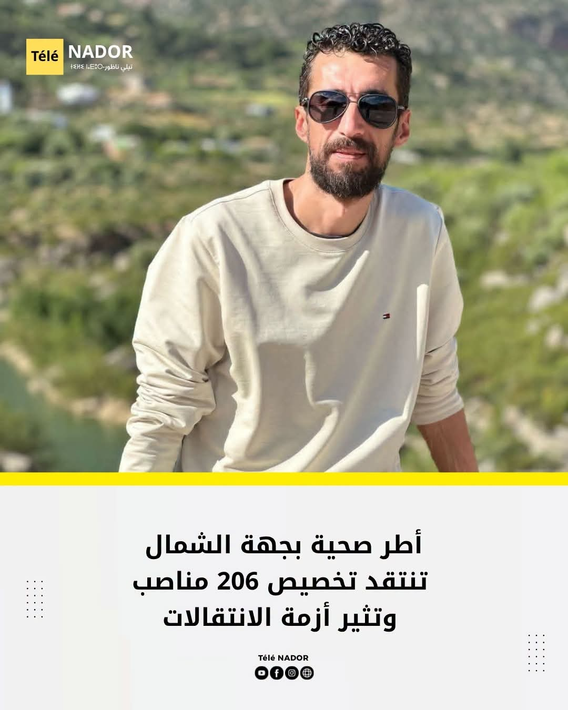

الحسيمة: عماد البلوقي ينتقد تخصيص 206 مناصب فقط للأطر الصحية بجهة طنجة تطوان الحسيمة ويثير أزمة الانتقالات

أثار الإعلان عن تخصيص 206 مناصب مالية فقط لتوظيف الأطر الصحية بالمجموعة الصحية الترابية لجهة طنجة تطوان الحسيمة، برسم ميزانية 2026، انتقادات بشأن مدى استجابة هذه الحصيصة لحجم الخصاص الذي تعاني منه المؤسسات الصحية بمختلف أقاليم الجهة.
وفي هذا السياق، انتقد عماد البلوقي، ممرض بالمستشفى الإقليمي محمد السادس بالحسيمة وعضو النقابة المستقلة للممرضين وتقنيي الصحة، عدد المناصب المرتقبة، معتبراً أنها لا تعكس الاحتياجات الفعلية للمؤسسات الصحية، ولا تواكب التحديات المطروحة أمام إصلاح المنظومة الصحية وتنزيل الجهوية المتقدمة.
وحذر البلوقي، في تدوينة له، من أن محدودية التوظيف ستزيد الضغط على الأطر التمريضية والتقنية التي تواصل العمل في ظل الخصاص المسجل، وهو ما قد ينعكس على ظروف اشتغالها وجودة الخدمات الصحية المقدمة للمواطنين.
كما أثار إشكالية الانتقالات، مشيراً إلى أن قلة المناصب قد تعرقل التحاق عدد من الموظفين بمقرات عملهم الجديدة، رغم حصولهم على مقررات انتقال قانونية، بسبب صعوبة تعويض الخصاص الذي ستخلفه مغادرتهم لمقرات عملهم الحالية.
ولفت البلوقي إلى محدودية فرص التوظيف في عدد من التخصصات، من بينها الصحة النفسية، والترويض الطبي، وتصحيح النطق، والنفس الحركي، وتقويم البصر، وصيانة المعدات البيوطبية، وعلاجات المواليد والأطفال، وصحة الأسرة والصحة الجماعاتية، فضلاً عن المساعدة الاجتماعية، معتبراً أن عدم توفير مناصب كافية لهذه التخصصات قد يؤثر على تكامل الخدمات الصحية، ويحد من قدرة المؤسسات الاستشفائية على تقديم رعاية شاملة.
وفي ما يتعلق ببطالة الخريجين، أكد أن المناصب المرتقبة لن تكون كافية لاستيعاب الأعداد المتزايدة من خريجي المعاهد العليا للمهن التمريضية وتقنيات الصحة، في ظل التفاوت بين عدد الباحثين عن العمل والفرص المتاحة.
ودعا وزارة الصحة والحماية الاجتماعية وإدارة المجموعة الصحية الترابية بالجهة إلى مراجعة سياسة تدبير الموارد البشرية، بما يضمن توزيعاً عادلاً للمناصب وفق الخصاص الفعلي، وإدماج مختلف التخصصات، إلى جانب إيجاد حلول عملية لملف الانتقالات.
فتح في تطبيق النقابة